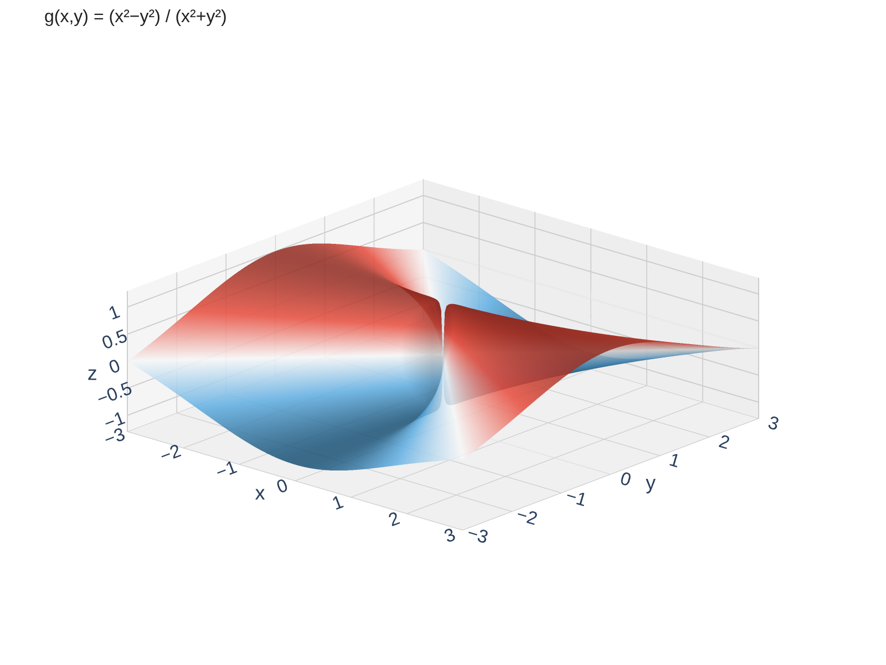

Limits in Multiple Variables
In Calc I, we asked: what happens to \(f(x)\) as \(x \to a\)?
There were only two directions to approach from — left and right.
In Calc III, we ask: what happens to \(f(x, y)\) as \((x, y) \to (a, b)\)?
Now there are infinitely many paths to approach from — along lines, curves, spirals, any path you can imagine.
This is the key difference: in 1D you check two directions. In 2D you must worry about every possible path to the point.
Two Functions, Two Very Different Behaviors
Let's compare what happens at the origin for two functions that both have the form \(\frac{0}{0}\) there.
\[f(x,y) = \frac{\sin(x^2 + y^2)}{x^2 + y^2}\]

\[g(x,y) = \frac{x^2 - y^2}{x^2 + y^2}\]



\(f\) settles down to a single value (\(1\)) no matter how you approach the origin.
\(g\) gives different values depending on your path — the limit does not exist.
The Formal Definition of a Multivariable Limit
Let \(f\) be a function of two variables whose domain \(D\) includes points arbitrarily close to \((a, b)\). We say that the limit of \(f(x,y)\) as \((x,y)\) approaches \((a,b)\) is \(L\), and write
\[\lim_{(x,y) \to (a,b)} f(x,y) = L\]
if for every \(\varepsilon > 0\) there is a corresponding \(\delta > 0\) such that
\[\text{if } (x,y) \in D \text{ and } 0 < \sqrt{(x-a)^2 + (y-b)^2} < \delta \text{ then } |f(x,y) - L| < \varepsilon\]
What does this mean in plain language?
If the limit is going to be \(L\), then you must be able to make \(f(x,y)\) as close to \(L\) as you want, just by squeezing \((x,y)\) close enough to \((a,b)\) — from any direction.
The crucial phrase: from any direction. In Calc I, "closeness" meant \(|x - a| < \delta\) (an interval). Here, closeness means \(\sqrt{(x-a)^2 + (y-b)^2} < \delta\) (a disk).
In practice, we rarely use the \(\varepsilon\)-\(\delta\) definition directly. Instead, we develop strategies for showing limits exist or don't exist.
Strategy: Showing a Limit Does NOT Exist
If a limit exists, it must be the same value no matter which path you take to the point. So to show a limit does not exist, we just need to find trouble:
The Two-Path Test
Find two paths to \((a, b)\) that give different limiting values. Then the limit does not exist.
Common paths to try:
- Along the \(x\)-axis: set \(y = 0\)
- Along the \(y\)-axis: set \(x = 0\)
- Along \(y = x\) (diagonal)
- Along \(y = mx\) (any line through the origin)
- Along curves: \(y = x^2\), \(y = x^3\), etc.
Warning: If two paths give the same value, that does not prove the limit exists. It just means those two paths agree. You would need to check all paths.
Example 1: The Two-Path Test in Action
Show that \(\displaystyle\lim_{(x,y) \to (0,0)} \frac{x^2 - y^2}{x^2 + y^2}\) does not exist.
Try the paths y = 0 and x = 0. What value does the function approach along each?
Path 1 — Along the \(x\)-axis (set \(y = 0\)):
\[f(x, 0) = \frac{x^2 - 0}{x^2 + 0} = \frac{x^2}{x^2} = 1 \quad\Rightarrow\quad \lim_{x \to 0} f(x, 0) = 1\]
Path 2 — Along the \(y\)-axis (set \(x = 0\)):
\[f(0, y) = \frac{0 - y^2}{0 + y^2} = \frac{-y^2}{y^2} = -1 \quad\Rightarrow\quad \lim_{y \to 0} f(0, y) = -1\]
Since \(1 \neq -1\), the two paths give different values. The limit does not exist.
Example 2: When Simple Paths Aren't Enough
Show that \(\displaystyle\lim_{(x,y) \to (0,0)} \frac{8x^3 y}{x^6 + y^2}\) does not exist.
Try the obvious paths (axes, y = mx) first, then try a curved path like y = x-cubed.
Let's try the obvious paths first.
Along the \(x\)-axis (\(y = 0\)): \(\dfrac{8x^3 \cdot 0}{x^6 + 0} = 0\)
Along the \(y\)-axis (\(x = 0\)): \(\dfrac{0}{0 + y^2} = 0\)
Along \(y = mx\): \(\dfrac{8x^3(mx)}{x^6 + m^2 x^2} = \dfrac{8mx^2}{x^4 + m^2} \to 0\)
Every line through the origin gives \(0\). But matching along all lines is still not enough. We need curved paths.
Along \(y = x^3\):
\[\frac{8x^3 \cdot x^3}{x^6 + (x^3)^2} = \frac{8x^6}{2x^6} = 4\]
Along \(y = x^3\), the function is constantly 4. Since the linear paths gave \(0\) and the cubic path gives \(4\): the limit does not exist.
Your Turn: Test This Limit
Does \(\displaystyle\lim_{(x,y) \to (0,0)} \frac{xy}{x^2 + y^2}\) exist?
Try a path that will obviously give a limit of zero, then see if you can think of path that could do something else.
Along \(y = 0\):
\[\frac{x \cdot 0}{x^2 + 0} = 0 \quad\Rightarrow\quad \text{limit} = 0\]
Along \(y = x\):
\[\frac{x \cdot x}{x^2 + x^2} = \frac{x^2}{2x^2} = \frac{1}{2} \quad\Rightarrow\quad \text{limit} = \frac{1}{2}\]
Since \(0 \neq \frac{1}{2}\), the limit does not exist.
Continuity of Multivariable Functions
Continuity works just like Calc I — the limit equals the function value at the point.
A function \(f\) of two variables is continuous at \((a, b)\) if:
\[\lim_{(x,y) \to (a,b)} f(x,y) = f(a,b)\]
This requires three things (same as Calc I):
- \(f(a,b)\) is defined
- The limit exists
- They are equal
Good news: Polynomials, rational functions (where defined), trig functions, exponentials, logarithms, and compositions of continuous functions are all continuous on their domains. Most functions you encounter are continuous wherever they're defined.
Strategy: Showing a Limit DOES Exist
The two-path test can disprove a limit, but it can never prove one.
To prove a limit exists, we need tools that handle all paths at once.
Tool 1: Squeeze Theorem
If \(|f(x,y) - L| \leq g(x,y)\) and \(g(x,y) \to 0\) as \((x,y) \to (a,b)\), then \(f(x,y) \to L\).
Trap the function between bounds that both go to the same value.
Tool 2: Polar Coordinates
Substitute \(x = r\cos\theta\), \(y = r\sin\theta\). Then \((x,y) \to (0,0)\) becomes \(r \to 0^+\).
Apply the Squeeze Theorem to bound the \(\theta\)-dependent factor and show the expression goes to zero.
Both tools convert the multivariable problem into something we can handle with Calc I techniques.
Example 4: Proving a Limit Exists
Show that \(\displaystyle\lim_{(x,y) \to (0,0)} \frac{5xy^2}{x^2 + y^2} = 0\).
Try the Squeeze Theorem using \(y^2 \leq x^2 + y^2\). Then try polar coordinates and apply the Squeeze Theorem to the result.
Method 1 — Direct Squeeze Theorem:
Since \(y^2 \leq x^2 + y^2\), we have \(\dfrac{y^2}{x^2 + y^2} \leq 1\). Therefore:
\[0 \leq \left|\frac{5xy^2}{x^2 + y^2}\right| = 5|x| \cdot \frac{y^2}{x^2 + y^2} \leq 5|x| \to 0\]
By the Squeeze Theorem, \(\dfrac{5xy^2}{x^2+y^2} \to 0\). \(\square\)
Method 2 — Polar Coordinates + Squeeze Theorem:
Let \(x = r\cos\theta\), \(y = r\sin\theta\):
\[\frac{5xy^2}{x^2+y^2} = \frac{5r^3\cos\theta\sin^2\theta}{r^2} = 5r\cos\theta\sin^2\theta\]
Now squeeze: since \(|\cos\theta\sin^2\theta| \leq 1\) for all \(\theta\):
\[0 \leq |5r\cos\theta\sin^2\theta| \leq 5r \to 0 \text{ as } r \to 0^+\]
By the Squeeze Theorem, the limit is \(0\), regardless of path. \(\square\)
Both methods use the Squeeze Theorem at the end. Polar coordinates simplify the algebra first — the \(r^2\) cancels, leaving a single factor of \(r\) to squeeze.
Your Turn: Prove or Disprove
Does \(\displaystyle\lim_{(x,y) \to (0,0)} \frac{x^2 y}{x^2 + y^2}\) exist? If so, find its value.
Use either the squeeze theorem or polar coordinates.
Polar coordinates: Let \(x = r\cos\theta\), \(y = r\sin\theta\):
\[\frac{x^2 y}{x^2 + y^2} = \frac{r^2\cos^2\theta \cdot r\sin\theta}{r^2} = r\cos^2\theta\sin\theta\]
Since \(|\cos^2\theta\sin\theta| \leq 1\), we get \(|r\cos^2\theta\sin\theta| \leq r \to 0\). The limit is \(0\).
Section 14.2 Summary
In 2D, you approach from infinitely many paths, not just left/right
Find two paths giving different values (two-path test). Sometimes curved paths like \(y = x^3\) are needed.
Use Squeeze Theorem or polar coordinates to handle all paths at once
\(\lim_{(x,y) \to (a,b)} f(x,y) = f(a,b)\) — same three conditions as Calc I
Big idea: Two matching paths don't prove a limit exists, but two different values do prove it doesn't. Proving existence requires a tool that covers all paths simultaneously.
Homework
Section 14.2
5, 7, 9, 15, 17, 21, 22, 23, 25, 29, 41, 43, 47, 49, 51